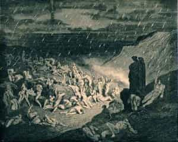
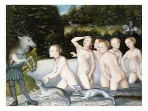
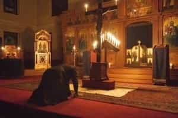

< < < Back
How To Prepare For Your First Formal Prayer – Return Of Kings
Greetings to the men of ROK; as promised, this week I begin to address the topic of prayer. I made allusion, last week, to prayer as a “liminal” action, and so it is; prayer is a threshold in man’s relationship with God. Many opposite poles unite in it: finite and infinite, absolute and contingent; slavery and sonship; alienation and intimacy; and so forth. Along this line, a paradoxical prerequisite to drawing near to God, is the Fear of God. For us to have any sense of the sacred, we must have reverence—i.e., holy fear.
In our era, blasphemy and vulgarity are the norm. Any kind of high standard, as “red pill” men should know especially well, is mocked and mischaracterized; high standards are bigoted, the signs of a joyless, narrow and judgmental mind. To be sure, the “church lady” has always been a phenomenon; women tend to conform to the reigning orthodoxy of any age or locale; there have always been flotillas of disapproving hags, who love bossing others about and enforcing conformity. And some contemptible men are also of this type. Furthermore, an atheistic or spiritually tepid society will be indifferent to blasphemy.

Not many years ago, I bought into this pejorative portrayal of all pious persons. “If God is God,” I reckoned, “He is not hurt by what we say about Him; people who get upset when people make fun of their religion are defending something that shouldn’t need defending. And, we have free speech; so they’d better just get a sense of humor about it.”
Now, it certainly is true, that God is not diminished or hurt by what we say about Him; but the crime of blasphemy is in itself an atrocious thing, something which ought not to blacken the fabric of existence. And what it certainly does harm, is man and the society of men. At base, to blaspheme is to mock every (transcendent, moral) standard, and every excellence—even the concept of excellence—because it sets at naught the Fountainhead, which gives meaning to such concepts.
Such is the reverence of great civilizations, that they have taken care not to give even accidental offense or slight to what they consider holy. “Sin is in the will,” St. Augustine said – meaning that one and the same act may be a sin or not, depending on the knowledge and intent of the man committing it. But in the tale of Actaeon and Diana, or the many legends depicting innocent humans running afoul of the fay folk, or even in the tale of how God slew Uzzah for touching the Ark of the Covenant (with good intentions) we see the sacred as something perilous, dreadful and potent in itself, unmoved by our protestations of benevolence.

For me, the legend of Actaeon and Diana is one of the more potent. Actaeon saw the sacred unveiled—i.e., Diana, naked at her bath. For his transgression of the sacred, he falls from his position of lordship over the beasts; he becomes one of his usual prey, and is slain by the dogs that formerly obeyed him. This is what men saw in blasphemy, the transgression of the sacred: the loss of the right relation of man to the gods and the cosmos, in an inversion lethal to man.
Whether we consider the inviolability of the sacred in itself, or the logical necessity of revering the sacred, if we wish to preserve any meaningful concept of the Good (and hence of virtue or of an upright civilization), it is clear that we cannot omit reverence towards what is holy.
So, my first piece of advice on prayer, is to cultivate the attitude and habit of reverence, which puts us in right relation to God and the cosmos, and produces the humility necessary for obtaining the Divine assistance. What is reverence? How do we show it?
The word reverence derives from the Latin revereri; re is an intensifier, and vereri means “to be in awe of, to fear, to respect.” So, “reverence” is “intense awe, fear and respect.” This is the profound sentiment of a man, not the cavalier presumption of a yoga mistress or church lady. Indeed, one of Satan’s great victories in modernity, has been to destroy the masculine virtue of religion even amongst “religious” people, exchanging it for effeminate decoys. The French reverie probably approximates most people’s idea of reverence – being dreamily enraptured with religious feelings.
Given what has gone before, it will be easy to understand why most men throughout history have not had so girlish a notion of reverence; rather, they viewed reverence as the foundation of manly character. From reverence, came their respect for all that denoted the holy and the good: legitimate authority, just laws, virtue and reason—the entire, masculine project of civilization. Reverence for God taught society to bow to kings, husbands and fathers. We remember that God is the ultimate Patriarch; reverence is the fabric of patriarchy.
Once found, and cultivated somewhat, reverence becomes as instinctual to us as breathing. We enter a Church and find our knees bowing and our hands forming the sign of the Cross almost automatically; we hear that someone has died, and instinctively bare our heads to what is above, bowed in acknowledgment of our subjection.
But this instinct may initially elude us, who have been raised in an age of blasphemy. Reverence, the Fathers and Saints teach, is the root of humility; humility removes the obstacles to communion with God, and to receptivity of His operation upon us. The bones of our epoch were knit together in the womb of blasphemy, however, so even the most rank irreverence can fail to register, and irreverence compounds itself. It can become a vicious cycle, and we must conscientiously avoid it.
For example, one of the first elements to a sense of the sacred, is to understand that “sacred” (and “holy,” “hallowed,” etc.) means “set apart.” The temple and its contents are set apart from the world; everything else is profane (from Latin profanus; one meaning of pro is “outside before” and fanum means “the fane,” i.e., the profane is everything before we cross over into the sacred boundary of the temple). We honor the sacred by according it separate styles, or exceptional qualities, of architecture, music, adornment, rites, gestures, etc. Those who say that Jesus would be angry that the Church had great temples, vessels, vestments, art, etc., are not following the way of humility and reverence; they actually advocate desecration by insisting that we routinely assimilate the sacred unto the profane.

So far as your personal spiritual lives and preparation for prayer go, you will want to do such things as the following in order to maintain the “separate” character of the sacred, and to honor it. I may speak in Catholic terms in what follows, but practitioners of other religions will easily understand how the same principles apply in their own traditions.
1. Create a dedicated place in your abode for focused prayer; keep it clean and do not let ordinary clutter intrude on it.
2. We want to pray continually; even so, we will set aside times for more formal prayer (in the dedicated space, above). Make sure these times are truly set apart – don’t squeeze them in or begrudge them. The idea is to consecrate the time and place; once consecrated, we forfeit our claim to them.
3. Try always to use dignified, beautiful, quality (but not necessarily costly) materials in connection with anything sacred (Bibles, prayerbooks, images and statuary, candles/lamps, etc.). Avoid cheap, gawdy, kitschy and sentimental things/materials. Beautiful and evocative things should be used to incite reverence, rather than to create a “sensual experience” centered upon your enjoyment.
4. Use traditional gestures of respect and affection for the sacred (bows, genuflections, prostrations, kisses, special postures for prayer, etc.). Never pass sacred places or objects without a reverent gesture of some kind. Remove hats and/or bow heads if our Lord is named, etc.
5. Strive always to harmonize a sincere, interior sentiment with the outward expression of reverence. Do not make reverent gestures out of mere habit or “rule-following,” and certainly strive not to make them for vanity’s sake.
This is how to make a beginning; reverence will deepen, become natural and instinctual, far beyond anything I could describe in a short list. But this points you in the right direction.
The bottom line: only if a man honors the Good, can he individually and socially pursue virtue and excellence. Let us fear and respect, therefore, that Being which is closer to us than we are to ourselves; wherever He is named or denoted, wherever He is specially called to mind, let heads and hearts be bared, knees be bent and necks be bowed. Let us abhor the queer abomination of blasphemy, and avoid companionship with blasphemers, for blasphemy is the herald of the void. If we begin thus by approaching God with honor, true prayer can occur.
“The fear of the Lord is the beginning of wisdom.”
Read More: How One Of King Arthur’s Tales Shows A Vital Masculine Lesson